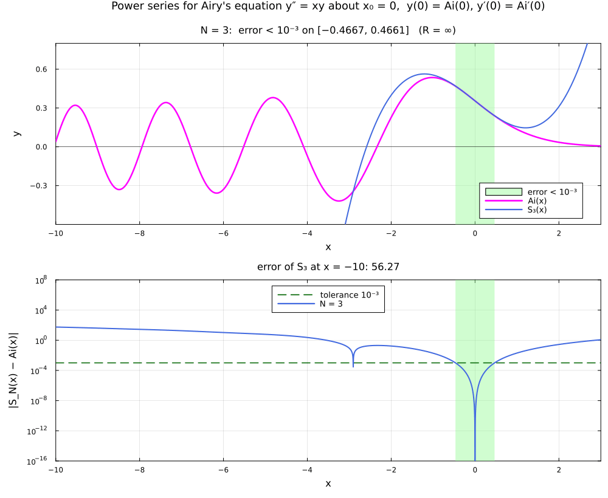
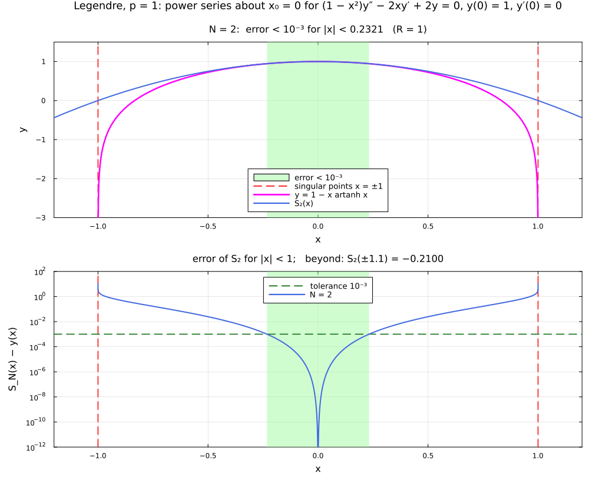
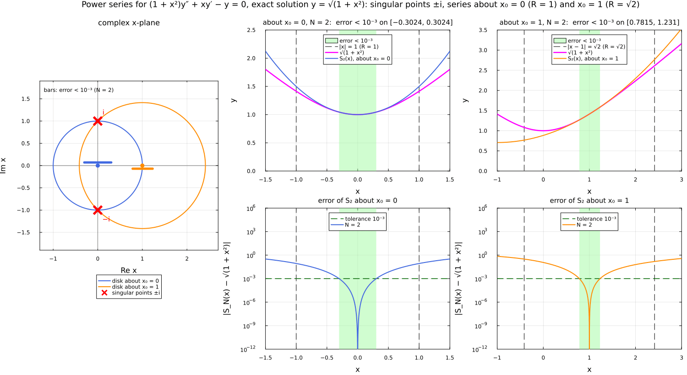

Power Series
Source inspiration: (Mathew 2000-2019).
Description
A second order linear differential equation
\[ y'' + P(x)\,y' + Q(x)\,y = 0 \]
whose coefficients \(P\) and \(Q\) have convergent Taylor series about a point \(x_0\) (an ordinary point) has solutions that are themselves power series, \(y(x) = \sum_{n=0}^{\infty} a_n (x - x_0)^n\). The power series method finds them by substituting the series into the equation, collecting the terms with the same power of \(x - x_0\), and setting each coefficient to zero. The result is a recurrence relation that gives each coefficient from earlier ones, starting from the two values \(a_0 = y(x_0)\) and \(a_1 = y'(x_0)\). For Airy’s equation \(y'' = x\,y\) about \(x_0 = 0\), for example, it is
\[ a_2 = 0, \qquad a_{n+2} = \frac{a_{n-1}}{(n+2)(n+1)}, \quad n = 1, 2, 3, \ldots \]
The solution is then approximated by a partial sum \(S_N(x) = \sum_{n=0}^{N} a_n (x - x_0)^n\). How far from \(x_0\) the partial sums can be trusted is settled by the singular points of \(P\) and \(Q\) in the complex plane: the series converges at least for \(|x - x_0| < R\), where \(R\) is the distance from \(x_0\) to the nearest singular point. Inside that disk \(S_N\) approaches \(y\) as \(N\) grows, slowly near its edge. Outside the series’ own disk of convergence, which is often exactly this one, the partial sums diverge, even where the solution itself is smooth. The three examples below show an equation with no singular points (Airy’s), one with singular points on the real axis (Legendre’s) and one whose singular points \(\pm i\) lie off the real axis, compared in each case with the exact solution. The page has no Mathews original, since his archive has no module on power series solutions; it is written from the standard theory of series solutions in textbooks of ordinary differential equations, and every number on it was computed for this page, in high-precision arithmetic (Python with mpmath) except where double precision is the point.
Animations
Each animation below shows the partial sums \(S_N(x)\) of one worked example closing in on the exact solution, with more terms in each frame. The upper panels plot \(S_N\) against the exact solution in the example’s own window. The lower panels plot the error \(|S_N(x) - y(x)|\) on a logarithmic scale, with the errors of the earlier partial sums in gray and the tolerance \(10^{-3}\) dashed. Green shading marks the interval about the centre \(x_0\) on which the error of the current partial sum stays below \(10^{-3}\). Where the radius \(R\) is finite, dashed vertical lines mark the ends \(x_0 \pm R\) of the interval on which the theorem guarantees convergence. A partial sum that leaves a window is drawn leaving it, and every label gives its true value. The partial sums are evaluated in 256-bit arithmetic, so the loss of digits described under Practical Notes does not appear in the pictures.
Mathews’ archive has no module on power series solutions, so all three animations are new, with no Mathews original. Every example is animated, Example 3 with both of its centres in one animation. Examples 2 and 3 are animated up to \(N = 40\), so the larger \(N\) of their tables (up to \(N = 640\) in Example 3(b)) are not shown. Neither is the odd solution \(y = x\) of Examples 2 and 3, a polynomial that every partial sum from \(N = 1\) on reproduces exactly.
Julia source scripts that generated these animations are linked under each case.
Case 1 — Airy’s equation \(y'' = x\,y\) about \(x_0 = 0\) (Example 1), \(N = 3, 6, \ldots, 120\) on \([-10, 3]\)
Behavior: Every point is ordinary, so \(R = \infty\) and no edge is drawn. Each new frame adds the next two nonzero terms of the series. The shaded interval widens in every frame until it fills the window at \(N = 90\), from \([-0.4667, 0.4661]\) at \(N = 3\) to \([-2.227, 2.210]\) at \(N = 12\). From \(N = 18\) on it reaches the right edge \(x = 3\), and from \(N = 90\) on it covers the whole window. The interval is nearly symmetric about \(0\), but the window reaches much farther to the left, so most of the animation shows its left end moving out, by less in each frame: from \(0.4424\) between \(N = 15\) and \(18\) to \(0.2372\) between \(N = 84\) and \(87\). At \(x = -10\) the error is above \(1\) in every frame up to \(N = 75\), with its largest value among the frames, \(2.264 \times 10^{6}\), at \(N = 24\). It is below \(10^{-10}\) in every frame from \(N = 111\) on and is \(5.359 \times 10^{-15}\) at \(N = 120\). Up to \(N = 75\) every partial sum leaves the window. Outside the shaded interval the error falls to zero only at isolated points, where \(S_N\) crosses \(\operatorname{Ai}\); these are the sharp downward spikes of the error curves, such as the one of \(S_3\) at \(x = -2.905\).

Case 2 — Legendre’s equation with \(p = 1\) (Example 2), \(N = 2, 4, \ldots, 40\), singular points \(x = \pm 1\)
Behavior: Every term after the first is negative, so \(S_N\) decreases toward \(y = 1 - x \operatorname{artanh} x\) as \(N\) grows, and the error \(S_N - y\) is positive for \(0 < |x| < 1\). The interval \(|x| < x^*\) on which it stays below \(10^{-3}\) widens in every frame, but more and more slowly: \(x^* = 0.2321\) at \(N = 2\), \(0.6604\) at \(N = 10\), \(0.8050\) at \(N = 20\) and \(0.8951\) at \(N = 40\), still well short of the singular points \(x = \pm 1\) (dashed red). There \(y \to -\infty\), and it leaves the window at \(x = \pm 0.9993\). The error panel stops at \(|x| = 1\). Beyond it the partial sums run off downward, farther in each frame: \(S_N(\pm 1.1) = -1.647\), \(-3.212\) and \(-10.15\) at \(N = 10\), \(20\) and \(40\), and from \(N = 10\) on they leave the window at the bottom before \(x = \pm 1.2\).

Case 3 — \((1 + x^2)\,y'' + x\,y' - y = 0\) about \(x_0 = 0\) and \(x_0 = 1\) (Example 3), \(N = 2, 4, \ldots, 40\), singular points \(\pm i\)
Behavior: The left panel is the complex \(x\)-plane. The singular points \(\pm i\) (red) lie at distance \(1\) from \(0\) and \(\sqrt 2\) from \(1\), so the series about \(0\) converges in the disk \(|x| < 1\) (blue) and the series about \(1\) in \(|x - 1| < \sqrt 2\) (orange). On the real axis these disks give the intervals \(-1 < x < 1\) and \(-0.4142 < x < 2.414\), whose ends are dashed in the other panels, although nothing in the graph of \(\sqrt{1 + x^2}\) marks them. The bars on the real axis are the current shaded intervals. Both grow toward the ends of their disk’s diameter. At \(N = 40\) the error is below \(10^{-3}\) on \([-0.9894, 0.9894]\) for the series about \(0\) and on \([-0.3742, 2.402]\) for the series about \(1\). The interval about \(0\) widens in every frame, and so does the right end of the interval about \(1\). Its left end moves back slightly at \(N = 6, 10, \ldots, 38\). At \(N = 40\) both partial sums leave their windows near the ends: the one about \(0\) for \(|x| \ge 1.184\), with \(S_{40}(1.5) = -2.402 \times 10^{4}\), and the one about \(1\) for \(x \le -0.6289\) and \(x \ge 2.706\). At \(x = 1.5\) the error of the series about \(1\) is \(4.859 \times 10^{-22}\). The shading marks where one partial sum is accurate, not where the series converges. Continued beyond the animation, the interval about \(0\) would pass \(x = 1\) at \(N = 54\) and reach \(1.003\) at \(N = 60\), though at every fixed \(x\) with \(|x| > 1\) the error eventually grows without bound.

Ordinary Points and Singular Points
Write the equation \(p(x)\,y'' + q(x)\,y' + r(x)\,y = 0\) in the standard form
\[ y'' + P(x)\,y' + Q(x)\,y = 0, \qquad P(x) = \frac{q(x)}{p(x)}, \quad Q(x) = \frac{r(x)}{p(x)}. \tag{1} \]
A function \(f\) is analytic at \(x_0\) if it equals its Taylor series \(f(x) = \sum_{n=0}^{\infty} \dfrac{f^{(n)}(x_0)}{n!}(x - x_0)^n\) for all \(x\) in some interval \(|x - x_0| < \rho\) with \(\rho > 0\).
The point \(x_0\) is an ordinary point of equation (1) if both \(P\) and \(Q\) are analytic at \(x_0\). Otherwise \(x_0\) is a singular point.
Polynomials, \(e^x\), \(\sin x\) and \(\cos x\) are analytic everywhere. A rational function in lowest terms is analytic everywhere except at the zeros of its denominator, and its Taylor series about \(x_0\) has radius of convergence equal to the distance from \(x_0\) to the nearest such zero, real or complex. So when \(p\), \(q\) and \(r\) are polynomials, the singular points are the zeros of \(p\) that remain poles of \(q/p\) or \(r/p\) after cancelling common factors.
Let \(x_0\) be an ordinary point of (1), and let \(R > 0\) be the smaller of the radii of convergence of the Taylor series of \(P\) and \(Q\) about \(x_0\). Then for any numbers \(a_0\) and \(a_1\) there is exactly one solution of (1) of the form
\[ y(x) = \sum_{n=0}^{\infty} a_n (x - x_0)^n, \qquad y(x_0) = a_0, \quad y'(x_0) = a_1, \]
and its series converges at least for \(|x - x_0| < R\). Every solution of (1) is \(y = a_0\,y_1 + a_1\,y_2\), where \(y_1\) is the solution with \((a_0, a_1) = (1, 0)\) and \(y_2\) the one with \((0, 1)\).
The theorem gives a lower bound. An individual solution can converge on a larger interval: in Example 3 one solution is the polynomial \(y = x\), although \(R = 1\) there. When \(P\) and \(Q\) are rational, \(R\) is simply the distance from \(x_0\) to the nearest singular point in the complex plane.
The Method
Shifting the index
Take \(x_0 = 0\) (for another centre, substitute \(t = x - x_0\) first, as in Example 3(b)). With \(y = \sum a_n x^n\), the terms of the equation are rewritten so that every sum runs over the same power \(x^n\):
\[ y'' = \sum_{n=0}^{\infty} (n+2)(n+1)\,a_{n+2}\,x^n, \qquad x\,y' = \sum_{n=0}^{\infty} n\,a_n\,x^n, \qquad x^2\,y'' = \sum_{n=0}^{\infty} n(n-1)\,a_n\,x^n, \qquad x\,y = \sum_{n=1}^{\infty} a_{n-1}\,x^n. \tag{2} \]
Algorithm
- Put the equation in standard form (1), check that \(x_0\) is an ordinary point, and find \(R\) from the nearest singular point.
- Substitute \(y = \sum a_n (x - x_0)^n\) and rewrite every term with (2).
- Set the coefficient of each power \((x - x_0)^n\) to zero. This gives a recurrence for \(a_{n+2}\) in terms of \(a_{n+1}, a_n, \ldots\); the small values of \(n\), where some sums have no term yet, may give separate equations.
- Set \(a_0 = y(x_0)\) and \(a_1 = y'(x_0)\) and run the recurrence. When the coefficients of the equation are polynomials, the recurrence has a fixed number of terms and each coefficient costs a fixed number of operations.
- Evaluate the partial sum \(S_N(x) = \sum_{n=0}^{N} a_n (x - x_0)^n\) for \(|x - x_0| < R\), increasing \(N\) until it stops changing to the accuracy wanted.
- The coefficients come from a recurrence, not from repeated differentiation.
- The series converges at least for \(|x - x_0| < R\), with \(R\) the distance to the nearest singular point, real or complex.
- The closer \(x\) is to the edge of the disk of convergence, the more terms are needed; beyond the series’ own radius of convergence (often exactly \(R\)) the partial sums do not converge.
Example 1 — Airy’s equation \(y'' = x\,y\) about \(x_0 = 0\)
Find the power series solution of Airy’s equation \(y'' - x\,y = 0\) with the initial values of the Airy function \(\operatorname{Ai}(x)\),
\[ y(0) = \operatorname{Ai}(0) = \frac{1}{3^{2/3}\,\Gamma(2/3)} \approx 0.3550280539, \qquad y'(0) = \operatorname{Ai}'(0) = -\frac{1}{3^{1/3}\,\Gamma(1/3)} \approx -0.2588194038, \]
and compare its partial sums with \(\operatorname{Ai}(x)\) on \(-10 \le x \le 3\).
Step 1 (singular points): \(P(x) = 0\) and \(Q(x) = -x\) are polynomials, so every point is ordinary and \(R = \infty\): the series converges for every \(x\).
Step 2 (substitute): by (2),
\[ y'' - x\,y = 2a_2 + \sum_{n=1}^{\infty} \bigl[(n+2)(n+1)\,a_{n+2} - a_{n-1}\bigr] x^n = 0. \]
Step 3 (recurrence): the constant term gives \(a_2 = 0\), and the coefficient of \(x^n\) gives
\[ a_{n+2} = \frac{a_{n-1}}{(n+2)(n+1)}, \qquad n = 1, 2, 3, \ldots \tag{3} \]
Each step of (3) jumps three places, so \(a_2 = a_5 = a_8 = \cdots = 0\), the coefficients \(a_3, a_6, a_9, \ldots\) come from \(a_0\), and \(a_4, a_7, a_{10}, \ldots\) from \(a_1\):
\[ a_3 = \frac{a_0}{6}, \quad a_6 = \frac{a_3}{30} = \frac{a_0}{180}, \quad a_9 = \frac{a_6}{72} = \frac{a_0}{12960}, \qquad a_4 = \frac{a_1}{12}, \quad a_7 = \frac{a_4}{42} = \frac{a_1}{504}, \quad a_{10} = \frac{a_7}{90} = \frac{a_1}{45360}. \]
Step 4 (two independent solutions): in general \(a_{3k} = a_0 \big/ \prod_{j=1}^{k} (3j-1)(3j)\) and \(a_{3k+1} = a_1 \big/ \prod_{j=1}^{k} (3j)(3j+1)\), so \(y = a_0\,f(x) + a_1\,g(x)\) with
\[ f(x) = 1 + \frac{x^3}{6} + \frac{x^6}{180} + \frac{x^9}{12960} + \cdots, \qquad g(x) = x + \frac{x^4}{12} + \frac{x^7}{504} + \frac{x^{10}}{45360} + \cdots \]
The ratio of successive nonzero coefficients, \(a_{n+3}/a_n = 1/\bigl((n+3)(n+2)\bigr)\), tends to \(0\), which confirms \(R = \infty\).
Step 5 (the Airy function): with \(a_0 = \operatorname{Ai}(0)\) and \(a_1 = \operatorname{Ai}'(0)\),
\[ \boxed{\ \operatorname{Ai}(x) = 0.3550280539\,f(x) - 0.2588194038\,g(x) = 0.3550280539 - 0.2588194038\,x + 0.0591713423\,x^3 - 0.0215682836\,x^4 + 0.00197237808\,x^6 - 0.000513530563\,x^7 + \cdots\ } \]
Verification. A partial sum satisfies the equation except for its top three terms: by (3) every lower power cancels, leaving
\[ S_N'' - x\,S_N = -\bigl(a_{N-2}\,x^{N-1} + a_{N-1}\,x^{N} + a_N\,x^{N+1}\bigr), \]
which was checked symbolically for \(f\) and \(g\) with \(N = 9, 10, 11\). The table compares \(S_N\) with \(\operatorname{Ai}(x)\) from a separate high-precision evaluation of the Airy function (mpmath, 150 digits); \(S_{300}\) agrees with it to better than \(10^{-111}\) at \(x = -10, -5, -2, 1, 2, 3\).
| \(N\) | \(\lvert S_N - \operatorname{Ai}\rvert\) at \(x = -10\) | \(x = -5\) | \(x = -2\) | \(x = 2\) | \(x = 3\) |
|---|---|---|---|---|---|
| 6 | \(1.70 \times 10^{3}\) | \(11.2\) | \(0.0470\) | \(0.0570\) | \(0.860\) |
| 12 | \(1.30 \times 10^{5}\) | \(7.20\) | \(2.58 \times 10^{-4}\) | \(2.77 \times 10^{-4}\) | \(0.0499\) |
| 21 | \(2.02 \times 10^{6}\) | \(1.19\) | \(3.76 \times 10^{-9}\) | \(3.86 \times 10^{-9}\) | \(2.76 \times 10^{-5}\) |
| 30 | \(4.11 \times 10^{4}\) | \(7.28 \times 10^{-3}\) | \(4.69 \times 10^{-15}\) | \(4.76 \times 10^{-15}\) | \(1.32 \times 10^{-9}\) |
| 45 | \(7.50 \times 10^{5}\) | \(3.03 \times 10^{-8}\) | \(1.80 \times 10^{-26}\) | \(1.81 \times 10^{-26}\) | \(2.23 \times 10^{-18}\) |
| 60 | \(5.57 \times 10^{3}\) | \(4.43 \times 10^{-15}\) | \(2.65 \times 10^{-39}\) | \(2.66 \times 10^{-39}\) | \(1.44 \times 10^{-28}\) |
| 90 | \(1.69 \times 10^{-4}\) | \(9.27 \times 10^{-32}\) | \(6.07 \times 10^{-68}\) | \(6.08 \times 10^{-68}\) | \(6.36 \times 10^{-52}\) |
| 120 | \(5.36 \times 10^{-15}\) | \(2.44 \times 10^{-51}\) | \(1.80 \times 10^{-99}\) | \(1.80 \times 10^{-99}\) | \(3.63 \times 10^{-78}\) |
The series converges for every \(x\), but the number of terms needed grows quickly with \(|x|\). The interval about \(0\) on which \(|S_N(x) - \operatorname{Ai}(x)| < 10^{-3}\) is:
| \(N\) | 6 | 12 | 21 | 30 | 45 | 60 |
|---|---|---|---|---|---|---|
| interval | \([-1.113,\ 1.108]\) | \([-2.227,\ 2.210]\) | \([-3.562,\ 3.536]\) | \([-4.681,\ 4.653]\) | \([-6.290,\ 6.260]\) | \([-7.706,\ 7.677]\) |
At \(x = -10\) the error does not fall steadily: it reaches its largest value, \(2.29 \times 10^{7}\), at \(N = 31\), is above \(1\) for every \(N\) from \(1\) to \(77\), and is below \(10^{-10}\) for every \(N \ge 109\) (checked to \(N = 300\)). For plotting, \(\operatorname{Ai}\) lies between its minimum \(-0.4190\) (at \(x = -3.2482\)) and maximum \(0.5357\) (at \(x = -1.0188\)) on \(-10 \le x \le 3\), so the window \([-10, 3] \times [-0.6, 0.8]\) holds the whole curve; the partial sums leave it at the left for every \(N\) in the table up to \(60\).
Example 2 — Legendre’s equation with \(p = 1\): singular points on the real axis
Legendre’s equation of order \(p\) is \((1 - x^2)\,y'' - 2x\,y' + p(p+1)\,y = 0\). Solve it for \(p = 1\),
\[ (1 - x^2)\,y'' - 2x\,y' + 2y = 0, \qquad y(0) = 1, \quad y'(0) = 0, \]
by a series about \(x_0 = 0\), and compare with the exact solution.
Step 1 (singular points): \(P(x) = -2x/(1 - x^2)\) and \(Q(x) = 2/(1 - x^2)\) have poles at \(x = \pm 1\), so \(x_0 = 0\) is ordinary and \(R = 1\).
Step 2 (substitute): by (2), the coefficient of \(x^n\) is
\[ (n+2)(n+1)\,a_{n+2} - n(n-1)\,a_n - 2n\,a_n + 2a_n = (n+2)(n+1)\,a_{n+2} - (n-1)(n+2)\,a_n = 0. \]
Step 3 (recurrence): dividing by \((n+2)(n+1)\),
\[ a_{n+2} = \frac{n-1}{n+1}\,a_n, \qquad n = 0, 1, 2, \ldots \tag{4} \]
Step 4 (coefficients): with \(a_0 = 1\) and \(a_1 = 0\), every odd coefficient is \(0\) and
\[ a_2 = -1, \quad a_4 = \tfrac13 a_2 = -\tfrac13, \quad a_6 = \tfrac35 a_4 = -\tfrac15, \quad a_8 = -\tfrac17, \quad \ldots, \quad a_{2k} = -\frac{1}{2k-1} \ (k \ge 1). \]
With \(a_0 = 0\) and \(a_1 = 1\) instead, (4) gives \(a_3 = 0 \cdot a_1 = 0\) and the series stops: \(y = x\), the Legendre polynomial \(P_1\).
Step 5 (the solution): the series is a known one,
\[ \boxed{\ y(x) = 1 - x^2 - \frac{x^4}{3} - \frac{x^6}{5} - \frac{x^8}{7} - \cdots = 1 - x\,\operatorname{artanh} x = 1 - \frac{x}{2}\ln\frac{1 + x}{1 - x}, \qquad |x| < 1,\ } \]
which is \(-Q_1(x)\), the negative of the Legendre function of the second kind of order \(1\). The general solution is \(y = c_0\,(1 - x\operatorname{artanh} x) + c_1\,x\).
Verification. Substituting \(y = 1 - x\operatorname{artanh} x\) into the equation gives \(0\) (checked symbolically), \(y(0) = 1\) and \(y'(0) = 0\), and its Maclaurin series agrees with the coefficients above. The ratio \(|a_{2k+2}/a_{2k}| = (2k-1)/(2k+1)\) tends to \(1\), so the radius of convergence is exactly \(R = 1\). For \(0 < |x| < 1\) every term after the first is negative, so \(S_N(x)\) decreases toward \(y(x)\) as \(N\) grows, and the tail is bounded by a geometric series:
\[ 0 < S_N(x) - y(x) \le \frac{|x|^{N+2}}{(N+1)(1 - x^2)} \qquad (N \text{ even}). \]
| \(N\) | error at \(x = 0.5\) | \(x = 0.9\) | \(x = 0.99\) |
|---|---|---|---|
| 2 | \(0.0247\) | \(0.515\) | \(1.64\) |
| 4 | \(0.00382\) | \(0.296\) | \(1.32\) |
| 6 | \(6.95 \times 10^{-4}\) | \(0.190\) | \(1.13\) |
| 10 | \(2.82 \times 10^{-5}\) | \(0.0898\) | \(0.899\) |
| 20 | \(1.47 \times 10^{-8}\) | \(0.0189\) | \(0.603\) |
| 40 | \(7.28 \times 10^{-15}\) | \(0.00131\) | \(0.346\) |
| 80 | \(3.38 \times 10^{-27}\) | \(1.05 \times 10^{-5}\) | \(0.153\) |
The exact values are \(y(0.5) = 0.7253469278\), \(y(0.9) = -0.3249975406\) and \(y(0.99) = -1.620185888\). An error below \(10^{-6}\) needs \(N = 16\) at \(x = 0.5\), \(N = 102\) at \(x = 0.9\) and \(N = 1062\) at \(x = 0.99\). At the singular points the solution is unbounded, \(y \to -\infty\) as \(x \to \pm 1\), and the series diverges there: \(S_N(1) = 1 - (1 + \tfrac13 + \tfrac15 + \cdots)\) is \(-0.7873\), \(-1.9378\) and \(-3.0891\) for \(N = 10\), \(100\) and \(1000\). Beyond \(|x| = 1\) the partial sums run off to \(-\infty\); at \(x = \pm 1.1\) they are \(-1.647\), \(-3.212\) and \(-10.150\) for \(N = 10\), \(20\) and \(40\). A plotting window of \([-1.2, 1.2] \times [-3, 1.5]\) shows this; the exact solution, drawn on \(-1 < x < 1\), leaves it at the bottom at \(x = \pm 0.99933\).
Example 3 — \((1 + x^2)\,y'' + x\,y' - y = 0\): singular points off the real axis
Solve
\[ (1 + x^2)\,y'' + x\,y' - y = 0, \qquad y(0) = 1, \quad y'(0) = 0, \]
- by a series about \(x_0 = 0\) and (b) by a series about \(x_0 = 1\), and compare both with the exact solution \(y = \sqrt{1 + x^2}\).
(a) Step 1 (singular points): \(P(x) = x/(1 + x^2)\) and \(Q(x) = -1/(1 + x^2)\) are analytic for every real \(x\), but they have poles at \(x = \pm i\). Their distance from \(0\) is \(1\), so \(R = 1\).
Step 2 (substitute): by (2), the coefficient of \(x^n\) is
\[ (n+2)(n+1)\,a_{n+2} + n(n-1)\,a_n + n\,a_n - a_n = (n+2)(n+1)\,a_{n+2} + (n-1)(n+1)\,a_n = 0. \]
Step 3 (recurrence):
\[ a_{n+2} = -\frac{n-1}{n+2}\,a_n, \qquad n = 0, 1, 2, \ldots \tag{5} \]
Step 4 (coefficients): with \(a_0 = 1\), \(a_1 = 0\), the odd coefficients vanish and
\[ a_2 = \tfrac12, \quad a_4 = -\tfrac14 a_2 = -\tfrac18, \quad a_6 = -\tfrac36 a_4 = \tfrac1{16}, \quad a_8 = -\tfrac{5}{128}, \quad a_{10} = \tfrac{7}{256}, \quad a_{12} = -\tfrac{21}{1024}, \ \ldots \]
These are the binomial coefficients \(\binom{1/2}{k}\), so
\[ \boxed{\ y(x) = 1 + \frac{x^2}{2} - \frac{x^4}{8} + \frac{x^6}{16} - \frac{5x^8}{128} + \cdots = \sqrt{1 + x^2}, \qquad |x| \le 1.\ } \]
With \(a_0 = 0\), \(a_1 = 1\) instead, (5) gives \(a_3 = 0\) and \(y = x\). The general solution is \(y = c_0\sqrt{1 + x^2} + c_1\,x\), and its second part is a polynomial that converges for every \(x\), beyond the theorem’s \(R = 1\).
Verification. \(y = \sqrt{1 + x^2}\) and \(y = x\) both satisfy the equation (checked symbolically), and the Maclaurin series of \(\sqrt{1 + x^2}\) agrees with (5) through \(x^{13}\) (and with \(\binom{1/2}{k}\) through \(k = 20\)). For \(0 < |x| \le 1\) the terms after the first alternate in sign and shrink, since \(|a_{n+2}/a_n| = (n-1)/(n+2) < 1\), so the error of \(S_N\) is at most the first omitted term, \(|a_{N+2}\,x^{N+2}|\) for even \(N\).
| \(N\) | error at \(x = 0.5\) | \(x = 0.9\) | \(x = 1.0\) | \(x = 1.1\) | \(x = 1.5\) |
|---|---|---|---|---|---|
| 2 | \(0.00697\) | \(0.0596\) | \(0.0858\) | \(0.118\) | \(0.322\) |
| 4 | \(8.46 \times 10^{-4}\) | \(0.0224\) | \(0.0392\) | \(0.0646\) | \(0.311\) |
| 6 | \(1.30 \times 10^{-4}\) | \(0.0108\) | \(0.0233\) | \(0.0461\) | \(0.401\) |
| 10 | \(4.19 \times 10^{-6}\) | \(0.00356\) | \(0.0116\) | \(0.0333\) | \(0.977\) |
| 20 | \(1.57 \times 10^{-9}\) | \(4.62 \times 10^{-4}\) | \(0.00428\) | \(0.0318\) | \(20.3\) |
| 40 | \(5.51 \times 10^{-16}\) | \(2.04 \times 10^{-5}\) | \(0.00155\) | \(0.0769\) | \(2.40 \times 10^{4}\) |
| 80 | \(1.81 \times 10^{-28}\) | \(1.08 \times 10^{-7}\) | \(5.52 \times 10^{-4}\) | \(1.24\) | \(9.42 \times 10^{10}\) |
On the real axis nothing happens at \(|x| = 1\): \(\sqrt{1 + x^2}\) is smooth for every real \(x\). Yet the series about \(0\) cannot converge beyond \(|x| = 1\), because \(\sqrt{1 + x^2}\) is singular at \(x = \pm i\). An error below \(10^{-6}\) needs \(N = 12\) at \(x = 0.5\), \(N = 64\) at \(x = 0.9\) and \(N = 392\) at \(x = 0.99\). At \(x = 1\) the series still converges, because \(|a_{2k}|\) falls like \(k^{-3/2}\) (\(|a_{2k}|\,k^{3/2}\) is \(0.2821\) at \(k = 2000\), near its limit \(1/(2\sqrt{\pi}) = 0.28209\)), but slowly: \(S_{4000}(1) = 1.4142120\) against \(\sqrt 2 = 1.4142136\). Just outside, at \(x = 1.1\), the error first falls, to its smallest value \(0.0300\) at \(N = 16\), and then grows with every further term (checked to \(N = 300\)). At \(x = 1.5\) the partial sums fall alternately above and below the exact value \(1.80278\) and, from \(N = 6\) on, each is farther from it than the one before (checked to \(N = 300\)): \(S_N(1.5) = 2.125\), \(1.492\), \(2.204\), \(1.203\), \(2.780\), \(0.1189\) for \(N = 2, 4, \ldots, 12\), then \(-18.49\), \(641.8\) and \(-24018\) for \(N = 20\), \(30\) and \(40\). For plotting, the window \([-1.5, 1.5] \times [0, 2.5]\) contains the exact curve.
(b) A series about \(x_0 = 1\). The distance from \(1\) to the singular points \(\pm i\) is \(|1 - i| = \sqrt 2\), so a series about \(x_0 = 1\) converges at least for \(|x - 1| < \sqrt 2\), that is for \(-0.4142 < x < 2.4142\), which reaches points where the series about \(0\) diverges. With \(t = x - 1\), the equation becomes
\[ (2 + 2t + t^2)\,y'' + (1 + t)\,y' - y = 0, \qquad y = \sum_{n=0}^{\infty} b_n t^n, \]
and the coefficient of \(t^n\) is \(2(n+2)(n+1)\,b_{n+2} + (n+1)(2n+1)\,b_{n+1} + (n-1)(n+1)\,b_n = 0\). Dividing by \(n+1\) gives a recurrence with three terms,
\[ b_{n+2} = -\frac{(2n+1)\,b_{n+1} + (n-1)\,b_n}{2(n+2)}, \qquad n = 0, 1, 2, \ldots \tag{6} \]
started from \(b_0 = y(1) = \sqrt 2\) and \(b_1 = y'(1) = 1/\sqrt 2\):
\[ \boxed{\ \sqrt{1 + x^2} = \sqrt 2\left(1 + \frac{t}{2} + \frac{t^2}{8} - \frac{t^3}{16} + \frac{3t^4}{128} - \frac{t^5}{256} - \frac{3t^6}{1024} + \frac{7t^7}{2048} - \frac{61t^8}{32768} + \cdots\right), \qquad t = x - 1.\ } \]
These coefficients agree with the Taylor series of \(\sqrt{1 + x^2}\) about \(1\) through \(t^{11}\). The root test is consistent with \(R = \sqrt 2 \approx 1.4142\): \(|b_k|^{-1/k}\) is \(1.517\), \(1.429\), \(1.422\) and \(1.420\) at \(k = 100\), \(1000\), \(2000\) and \(3000\).
| \(N\) | error at \(x = 0\) | \(x = 0.5\) | \(x = 1.5\) | \(x = 2\) | \(x = 2.3\) | \(x = 2.5\) | \(x = -0.5\) |
|---|---|---|---|---|---|---|---|
| 5 | \(0.0109\) | \(1.13 \times 10^{-4}\) | \(3.59 \times 10^{-5}\) | \(0.00126\) | \(0.00418\) | \(0.00758\) | \(0.141\) |
| 10 | \(8.24 \times 10^{-4}\) | \(3.71 \times 10^{-7}\) | \(2.10 \times 10^{-7}\) | \(3.29 \times 10^{-4}\) | \(0.00510\) | \(0.0225\) | \(0.0537\) |
| 20 | \(3.34 \times 10^{-6}\) | \(3.34 \times 10^{-13}\) | \(1.43 \times 10^{-12}\) | \(2.89 \times 10^{-6}\) | \(6.82 \times 10^{-4}\) | \(0.0133\) | \(0.0327\) |
| 40 | \(1.26 \times 10^{-9}\) | \(1.08 \times 10^{-22}\) | \(4.86 \times 10^{-22}\) | \(1.02 \times 10^{-9}\) | \(4.56 \times 10^{-5}\) | \(0.0155\) | \(0.0389\) |
| 80 | \(4.42 \times 10^{-16}\) | \(3.24 \times 10^{-41}\) | \(1.51 \times 10^{-40}\) | \(3.49 \times 10^{-16}\) | \(5.61 \times 10^{-7}\) | \(0.0583\) | \(0.147\) |
At \(x = 1.5\) and \(x = 2\), where the series about \(0\) has errors of \(2.40 \times 10^{4}\) and \(2.78 \times 10^{9}\) with \(N = 40\), the series about \(1\) has errors of \(4.86 \times 10^{-22}\) and \(1.02 \times 10^{-9}\). The points \(x = 2.5\) and \(x = -0.5\) lie at distance \(1.5 > \sqrt 2\) from the centre, and there the error grows to \(2.30\) and \(5.83\) at \(N = 160\) and to \(5.46 \times 10^{11}\) and \(1.39 \times 10^{12}\) at \(N = 640\). Inside the interval, at \(x = 2.3\) and \(x = -0.3\) (distance \(1.3\)), the errors at \(N = 640\) are \(8.28 \times 10^{-29}\) and \(1.81 \times 10^{-28}\). For plotting, the window \([-1, 3] \times [0, 3.5]\) contains the exact curve, which rises from \(1\) at \(x = 0\) to \(3.162\) at \(x = 3\).
Practical Notes
Even when the series converges for every \(x\), summing it in floating point can lose most of the digits. For Airy’s function at \(x = -10\) the terms \(a_n x^n\) grow to \(2.29 \times 10^{7}\) (at \(n = 31\)) before they decay, while \(\operatorname{Ai}(-10) = 0.04024\). Summed in double precision in order of increasing \(n\), \(S_{120}(-10)\) is wrong by \(4.2 \times 10^{-9}\), although its truncation error is only \(5.4 \times 10^{-15}\): about seven correct significant digits remain. Far from \(x_0\) it is better to integrate the equation numerically or to use an asymptotic formula.
A solution that is smooth on the whole real line can still have a series with a finite radius (Example 3). Before trusting a partial sum, find the singular points of \(P\) and \(Q\) in the complex plane, not only on the real axis. In general, by the root test, the terms \(a_n (x - x_0)^n\) of a series with radius of convergence \(\rho\) shrink at a rate close to \(\bigl(|x - x_0|/\rho\bigr)^n\) for large \(n\), so the number of terms needed grows without bound as \(|x - x_0| \to \rho\) (Examples 2 and 3: \(N = 1062\) and \(N = 392\) terms for an error below \(10^{-6}\) at \(x = 0.99\)).
Re-centering. Example 3(b) shows the remedy for a finite radius: start a new series at a point inside the old disk, with \(b_0\) and \(b_1\) taken from the old series or the solution there, and continue. Doing this repeatedly with short series and small steps is the idea behind the Taylor series method for ODEs, where each step uses a truncated Taylor series about the current point.
Singular points. At a singular point \(x_0\) the theorem does not apply and a power series solution may not exist. When \(x_0\) is a regular singular point, as \(0\) is for Bessel’s equation, a series multiplied by a power \((x - x_0)^r\) works instead; see the Frobenius Series Solution.
Related pages. Taylor polynomials of known functions, without a differential equation, are on the Maclaurin and Taylor Series page.